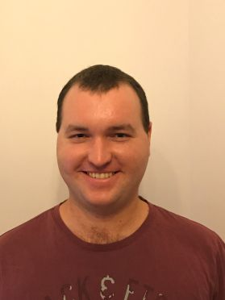

NativeDevs
COSC2196: Introduction to Information Technology
Assignment 2
Below is the profiles of each member for our team, NativeDevs.
| Name | Student Number | |
|---|---|---|
| Lindesay Ackland | s3776584 | s3776584@student.rmit.edu.au |
| Sean Betts | s3794440 | s3794440@student.rmit.edu.au |
| Lillian Cobbs | s3755138 | s3755138@student.rmit.edu.au |
| Katherine Hallam | s3775575 | s3775575@student.rmit.edu.au |
| Jacob Moors | s3607359 | s3607359@student.rmit.edu.au |
| Joshua Townsend | s3708682 | s3708682@student.rmit.edu.au |
Lindesay Ackland
N/A

Sean Betts

My name is Sean Betts, I live in Queensland, and am looking to find work developing software. I have a Bachelor of Engineering Degree, majoring in Computer and Software Systems.
I am interested in all kinds of software, from robotics to web application development. My hobbies include playing tennis, and reading web novels.
My full profile can be found at here.
Personality Test Results
Myers-Briggs Test
Learning Style Test

Big Five Personality Test
Impact on the Group
Lillian Cobbs
I am from Geraldton W.A. My full profile can be found at here.
I came to RMIT to study java code.
but now I am also studying IT Programing with the
hope of getting some part time work from home once I finish my studies.
Before I came to Geraldton I lived south of Perth W.A
Where I study at T.A.F.E and completed 4 cousres.
Katherine Hallam
Originally from the UK, my family and I moved to Perth, Western Australia when I was five years old because we needed a change, apparently. As far as education goes I have a Diploma in Beauty Therapy and a Diploma in Childhood Education, as well as a few Cert Three’s in other subjects. My main spoken language is English although I can speak (very) basic Italian. One of my hobbies includes horse riding; I actually used to own my own horse as well as a pony but due to some unfortunate circumstances I had to sell them. Another of my hobbies includes writing poetry and I have had some of my poems published in a few publications. I also have a miniature Schnauzer called Scooter, who I enjoy taking for walks.
My full profile can be found at here.
Personality Test Results
Myers-Briggs Test
Learning Style Test
Big Five Personality Test
Impact on the Group
Jacob Moors
 N/A
N/A
Joshua Townsend
 N/A
N/A